SEXILIO
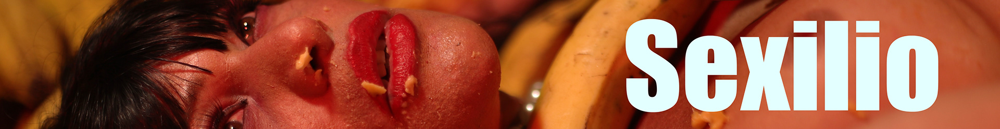
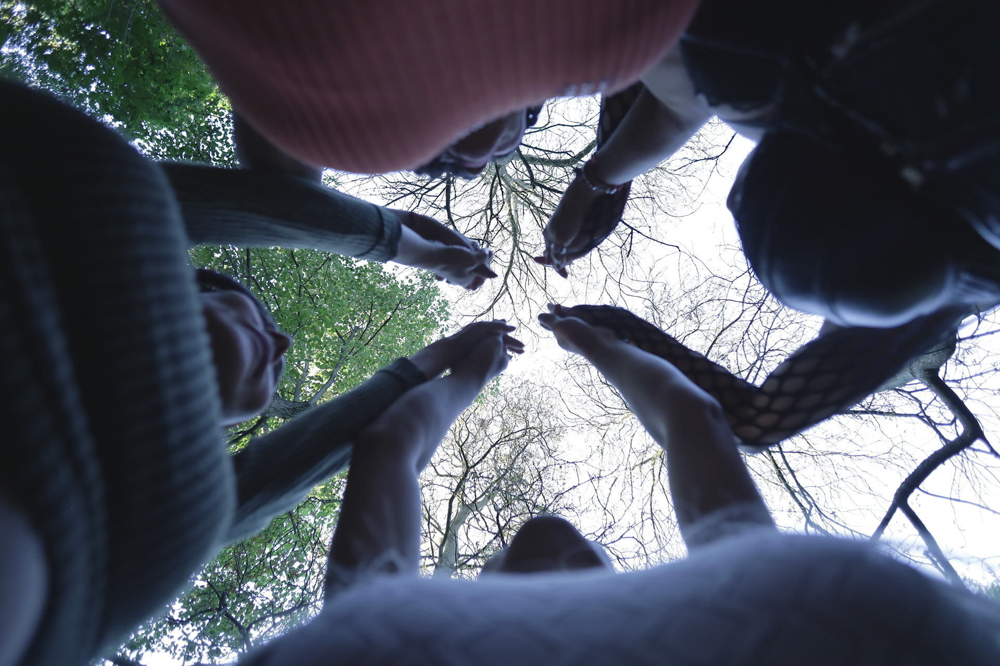
SEXILIO is an immersive virtual reality experience that explores the emotional and physical journey of trans Latin American women migrants in Paris.
SEXILIO is a play on words—sexuality, identity, and exile—as the only possibility of being. From the initial fall into the Bois de Boulogne to the hidden worlds concealed within it, the user is drawn into the daily life of sex workers.
Join the SEXILIO journey with our crowdfunding!
Your contribution helps bring a trans and migrant archive to life.
donateAs the experience unfolds, they must navigate through various environments and challenges that reveal the complexities of migration, sex work, discrimination, police violence, family struggles, and the ongoing quest for identity and community.
In this exercise of remembrance, through food, the body, and space, individual and collective memories are activated—transforming them into a living archive.
SEXILIO is an act of resistance and visibility.
Methodology
Our creative process is based on co-creation through a series of collaborative workshops. These sessions bring together the protagonists and the artistic team to share experiences and build the narratives that shape the project.
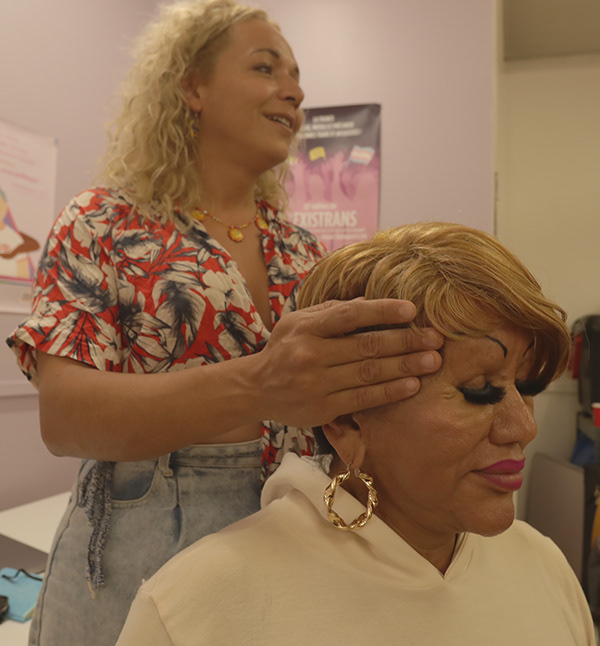
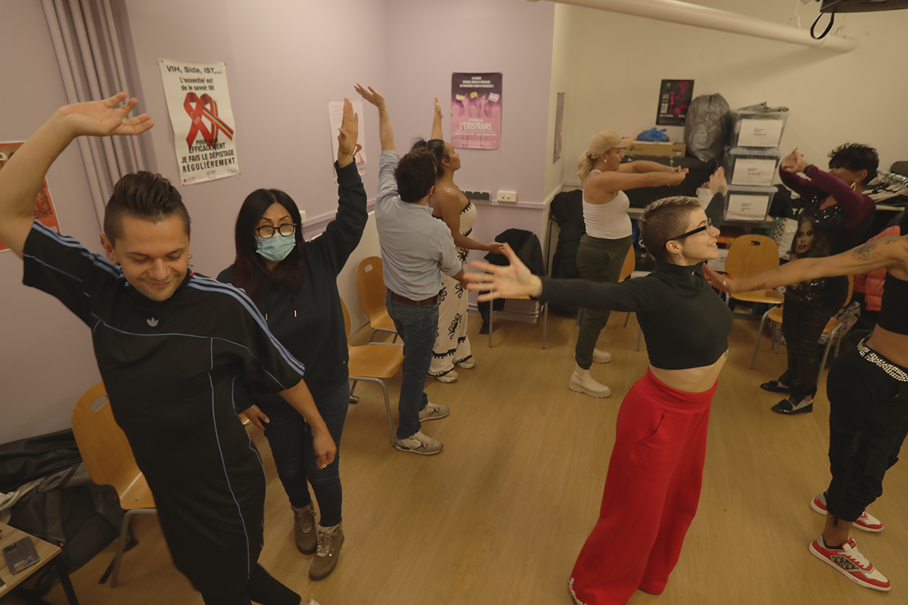
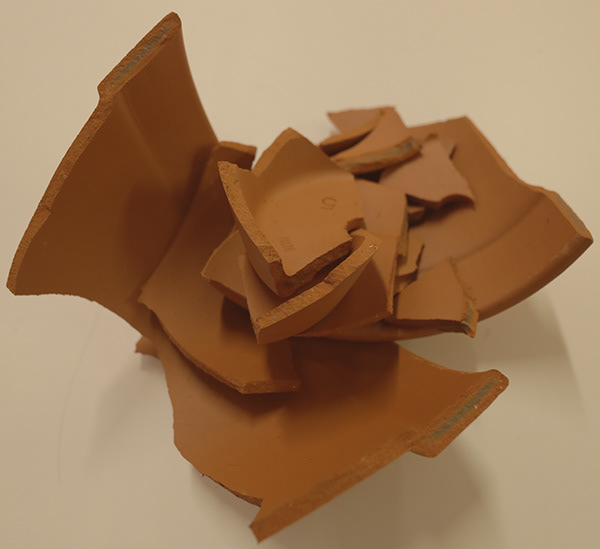
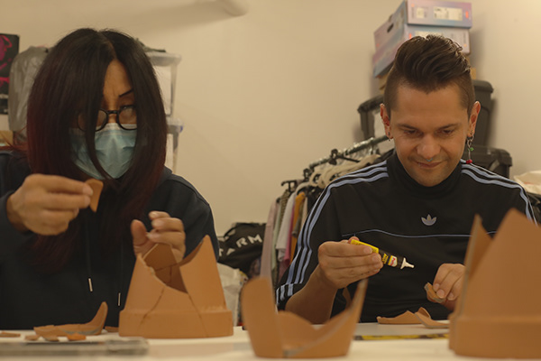
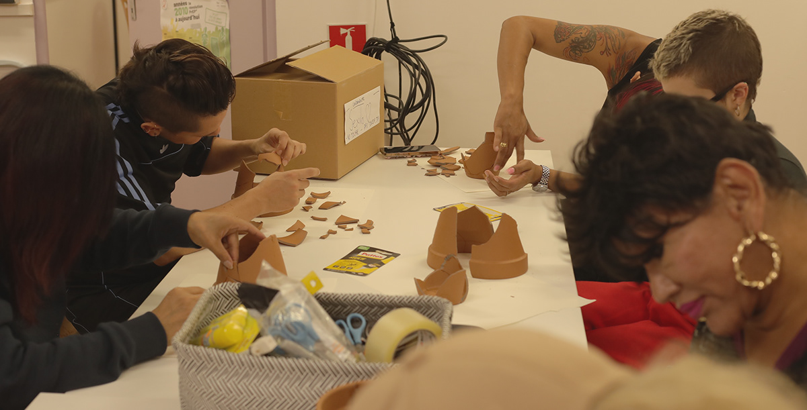
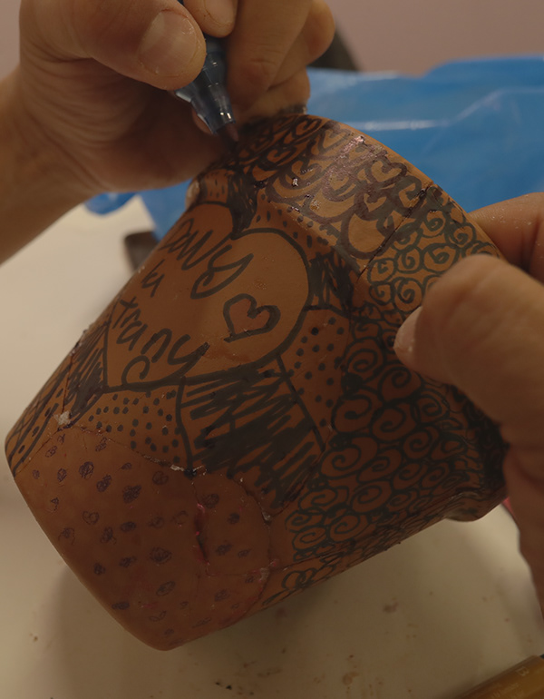
Each workshop fosters a space of care to explore memories of migration, identity, and belonging. Using artistic tools like writing, music, dance, photography, and theater, the participants create in their own unique ways
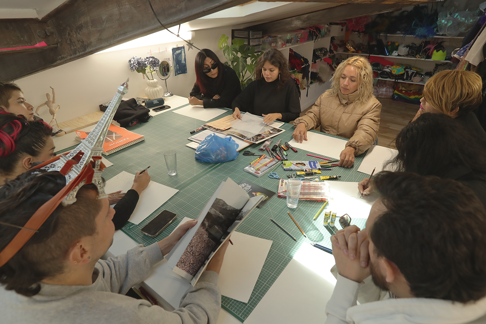
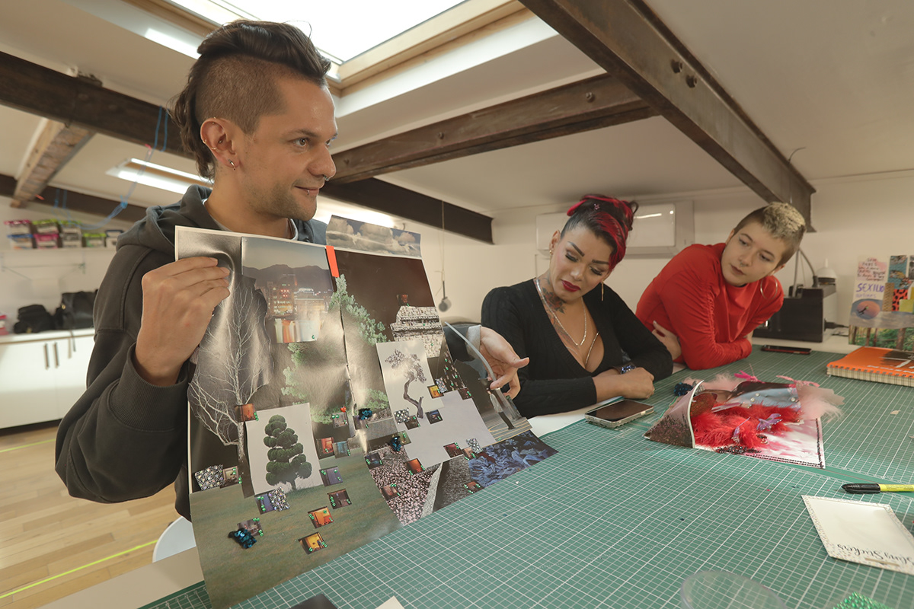
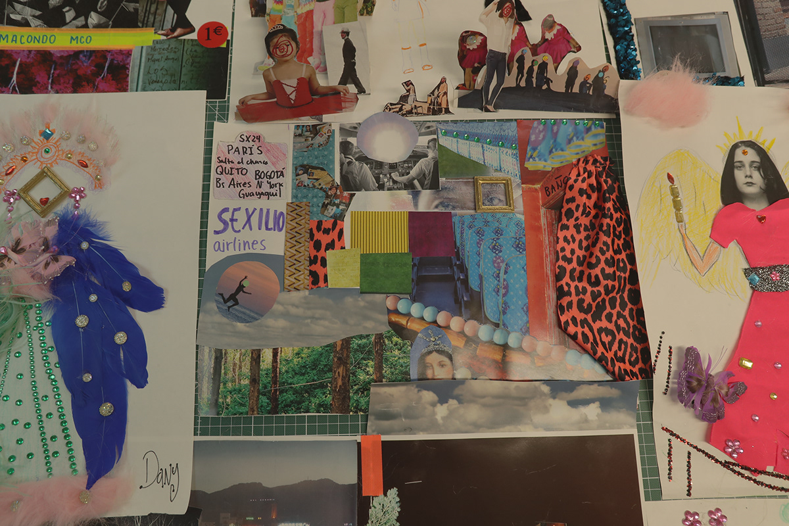
This collective process centers lived experience, allowing the work to emerge directly from the voices and stories of those who inhabit it.
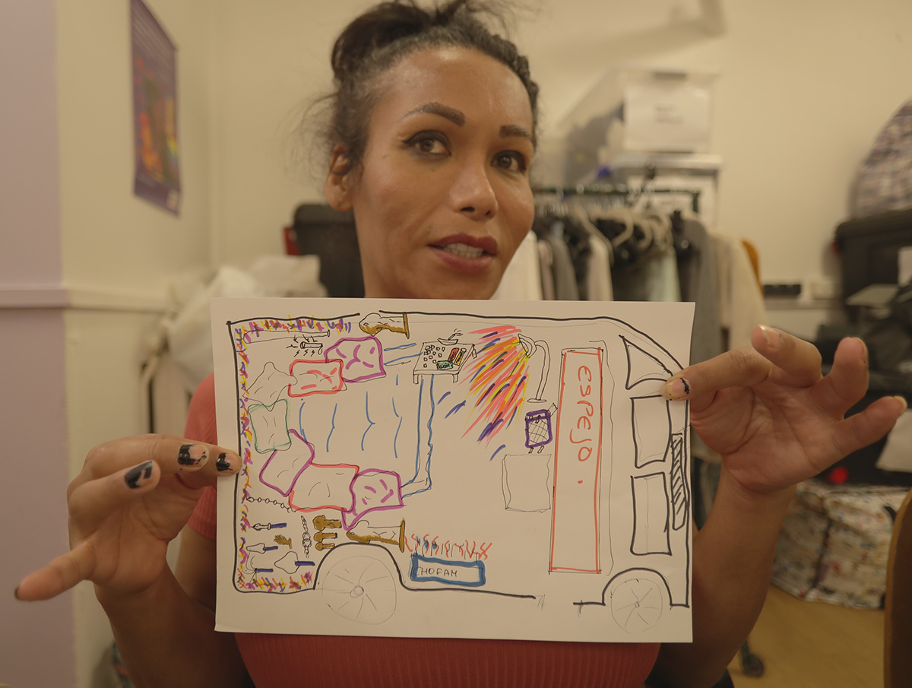
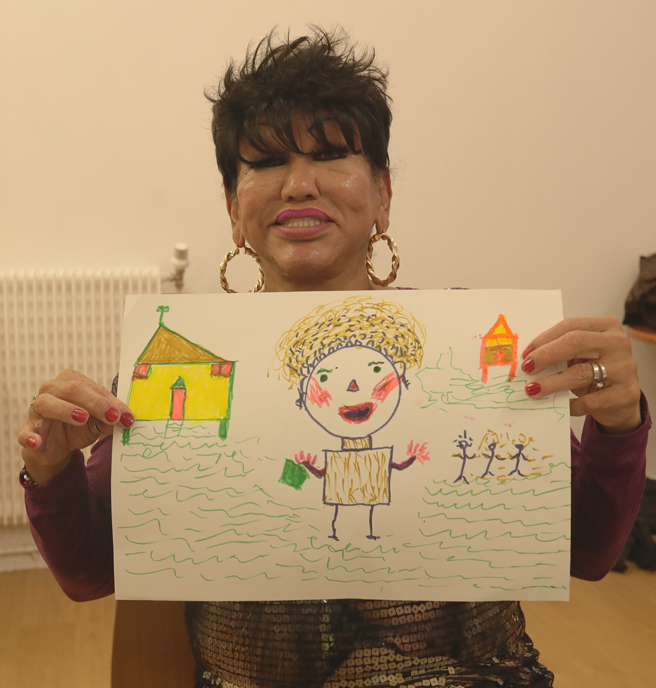
coprod
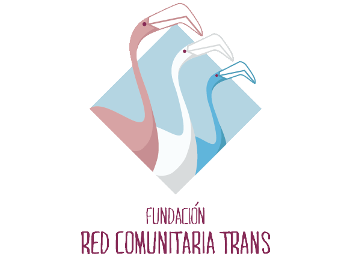
project team
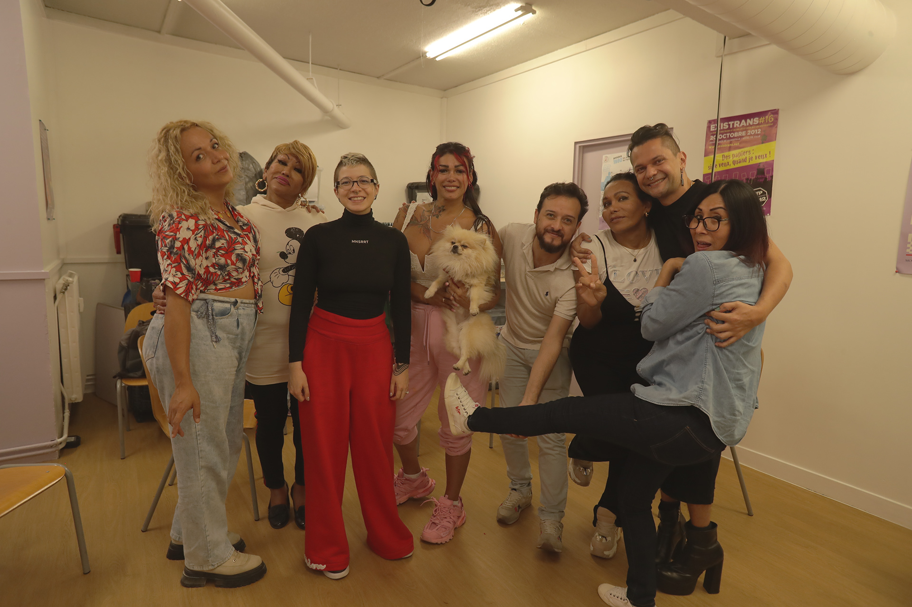
- Directors:
- Daniela MALDONADO SALAMANCA - Pascale ESPINOSa - PaulX Gempeler
- Photography:
- Juan david cortés
- XR Producer:
- Andres BURBANO
- Participants:
- Chefo PACHECO - Lasmy Gaona - Luna CRUZ - Leticia ESPINOZA